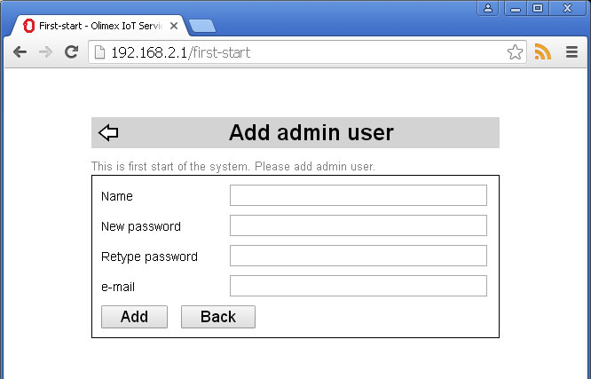
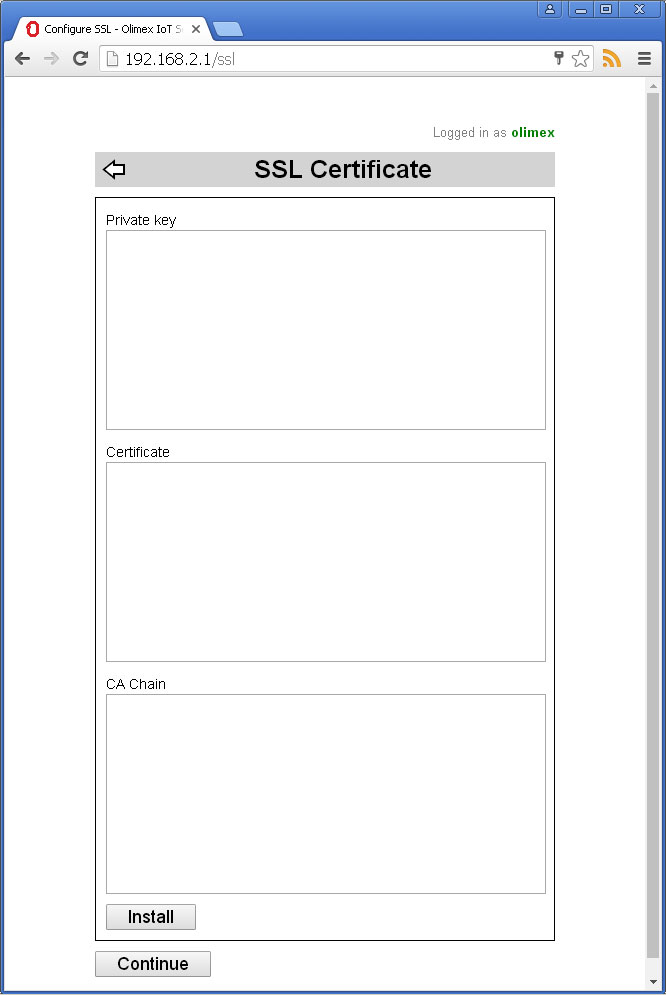
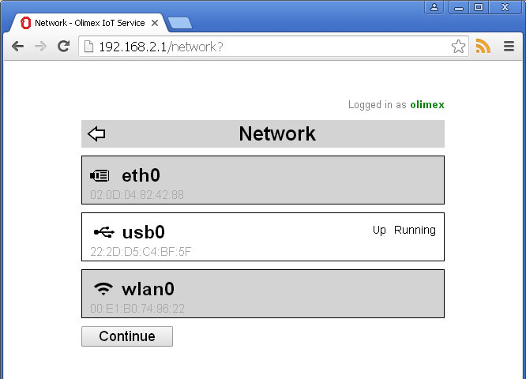
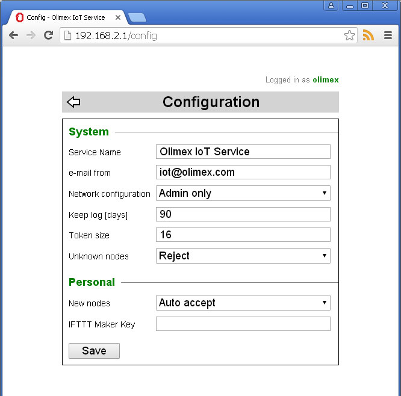
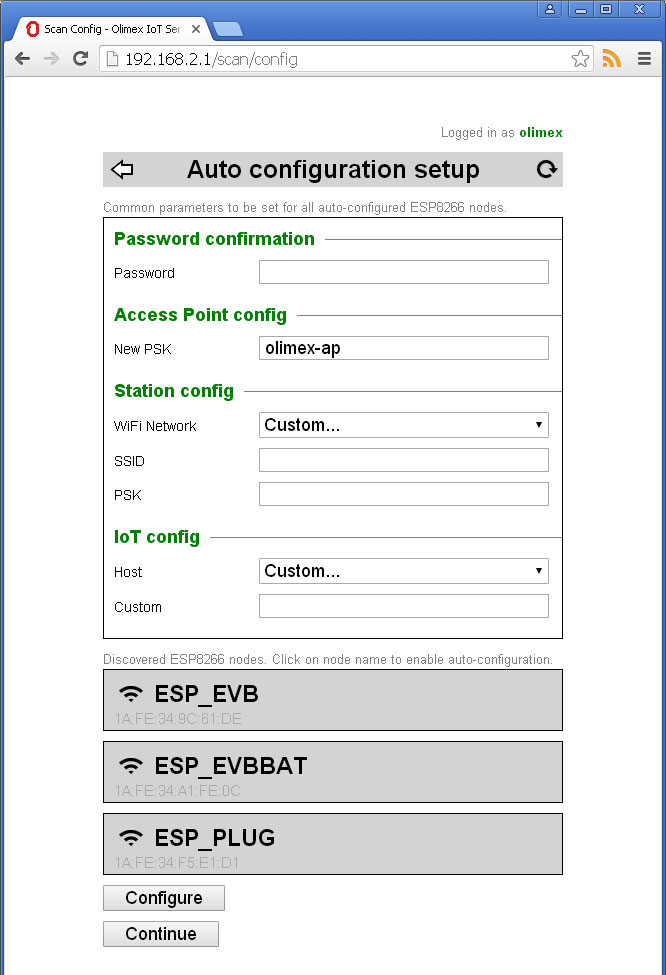
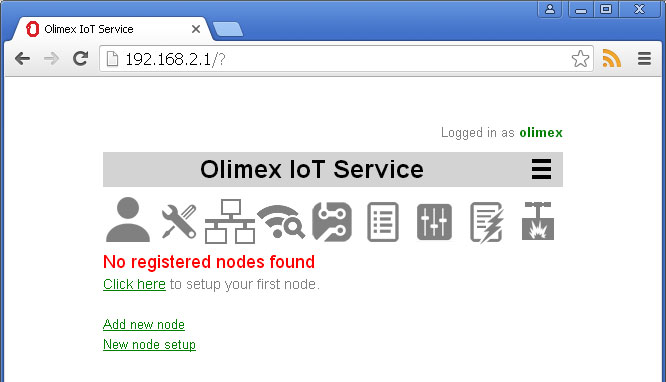

Back to How to install OlimexIoT server
Make sure that your computer is connected to the board's Mini USB port using USB mini cable.
Open your favorite browser and navigate to http://192.168.2.1
Fill admin user credentials
Copy and paste SSL certificate if you have one. Private key, Certificate and CA Chain have to be PEM encoded. Certificate have to match Server Name you entered during previous step.
You can skip this step and configure SSL later.
You can skip this step and configure network later.
Change service configuration parameters. This can be done later. You can read detailed parameters description here.
NOTE If your MOD-WIFI-R5370 is not plugged into the board this step will be skipped!
Here you can configure ESP8266 nodes running our IoT Firmware (reset to factory default settings). Server will try to connect to the nodes' access point and configure them to report events. You can read more detailed explanation here.
You can skip this step and configure your nodes at later stage.
Your IoT server is ready to operate.
Continue with Automated ESP8266 Node Setup or Manual node setup
Back to How to install OlimexIoT server